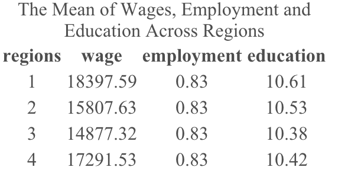
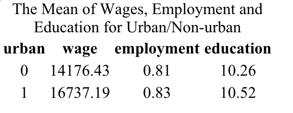
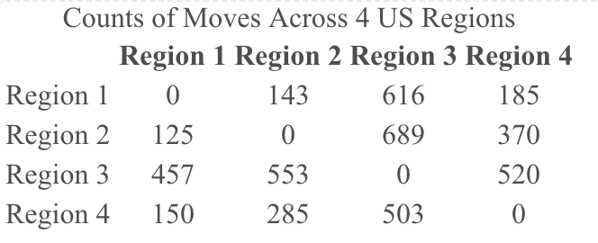
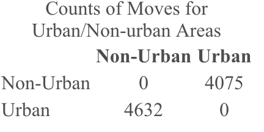
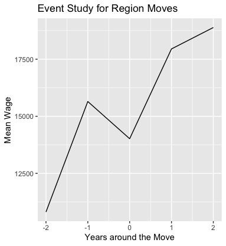
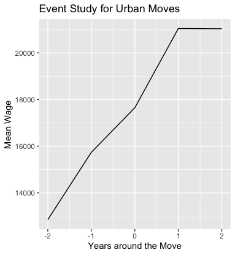

- Here is the original R code script for this project: [Link].
- Our analysis focused solely on the impact on wages, without considering the effects on living expenses. While regional and urban moves may not significantly affect wages, they could substantially reduce living costs. This reduction in expenses could provide sufficient motivation for people to relocate to different regions or non-urban areas.
- A fundamental assumption of OLS regression is the linearity between regressors and the dependent variable, wage. However, this relationship may actually be non-linear, which our OLS models might not capture. To address this issue, further tests, diagnostic plots, and model updates are necessary.
- The adjusted R-square value indicates the proportion of wage variance explained by our model. However, an R-square of 22.57% suggests that a considerable portion of wage variance remains unaccounted for. This indicates that other significant variables might be missing from our model.
- The average wages calculated are susceptible to extreme values and might not adequately represent the dataset. As an alternative, we could employ quantile regression models using median wages in future work to better address this issue.
- Claeskens, G.; Hjort, N. L. (2008). Model Selection and Model Averaging. Cambridge University Press.
- Davidson, Russell; MacKinnon, James G. (1993). Estimation and Inference in Econometrics. New York: Oxford University Press.
- Konishi, S.; Kitagawa, G. (2008). Information Criteria and Statistical Modeling. Springer.
- MacKinlay, A. C. (1997). Event Studies in Economics and Finance, Journal of Economic Literature.
- Rao, C. R. (1973). Linear Statistical Inference and its Applications(Second ed.). New York: J. Wiley & Sons.
- Vrieze, S. I. (2012). Model selection and psychological theory: a discussion of the differences between the Akaike Information Criterion (AIC) and the Bayesian Information Criterion (BIC). Psychological Methods.
Executive Summary
In this project, we analyzed the National Longitudinal Surveys 1979 (NLSY79) data from the UCLA World Biographical Information System Online to study the relationship between wages and mobility patterns in the United States from 1979 to 2012. Our dataset included over 8,000 individuals, tracking variables such as income, education, and regional movements. We observed higher average wages and education in certain regions and urban areas, yet surprisingly, more people moved to lower-wage regions and non-urban areas. We defined specific variables for employment status and urban living, and constructed transition matrices to track regional and urban moves. Event study analysis centered on the impact of these moves on wages. Our results, depicted in graphs and OLS regression models, revealed that wage changes coincided with regional moves but not urban moves. However, our regression models, including a more complex one with better fit, showed no significant association between regional or urban moves and wages. Consequently, our study concludes that there is no substantial evidence to support a general wage difference between individuals who move and those who stay in their original location. This research challenges common perceptions about the economic factors driving mobility and provides valuable insights into the intricate dynamics of migration decisions and their relationship with economic conditions.
Data Introduction
We utilized non-public panel data from the UCLA World Biographical Information System Online (WBIS) database, which included the expanded National Longitudinal Surveys 1979 (NLSY79) data from the U.S. Bureau of Labor Statistics, spanning from 1979 to 2012. This dataset contained detailed biographical and locational information, encompassing survey years, individual IDs, ages, genders, races, marital status, annual income, annual living expenses, years of education, living regions, and urban locations for over 8,000 individuals.
Data Preprocessing and Exploratory Data Analysis
We are interested in conducting an event study to examine the wage versus mobility pattern for individuals who moved (movers) compared to those who stayed in the same location (stayers). To facilitate this analysis, we defined additional variables and computed summary statistics to better understand our data. Since the original dataset contained only a few missing entries (143 out of 208,473 observations), we excluded these values for more streamlined modeling. We designated the 'employment' variable as binary, marking it as one if the wage for observation i was greater than zero. Additionally, we converted the urban column, which had values of 0, 1, and 2, into a binary format by combining urban areas 1 and 2. Our initial analysis involved calculating the average wages, employment rates, and levels of educational attainment across different regions and in urban versus non-urban areas. The results of these calculations were summarized in the following matrix tables:
-


From the summaries above, it is observed that average wages and education levels are generally higher in region 1 and urban areas, suggesting these areas might be more favorable for mobility. To calculate the number of moves across U.S. regions and between urban and non-urban areas for each possible transition, I tracked the 'region' and 'urban' values annually. A move was counted whenever there was a change in these values between consecutive years, as indicated by lagged columns. These moves were then accumulated to create transition matrices across regions and between urban and non-urban areas. The summary matrix tables below provide an overview of these findings:
-


However, the table on movement patterns reveals that more people tended to move to region 3 and non-urban areas, rather than to region 1, region 4, and urban areas, which have higher average wages.
Event Study OLS Modeling
We initiated the study by creating an event corresponding to each move, capturing the move times for both regional and urban relocations as two distinct variables: region_event_time and urban_event_time. Subsequently, we computed the mean wages for each event time. These calculations enabled us to plot the average wages of individuals who moved, covering the years leading up to and following the move, with the time of the move centered at t=0. These patterns are illustrated in the two subsequent graphs:
-


From the above plots, it is evident that wage transitions occur before and after regional moves. However, this pattern is not observed for urban moves.
To delve deeper into the impact of relocation on wages, I developed two following OLS (Ordinary Least Squares) regression models - one simple and one complex. These models were applied across various event times to analyze the wage disparities between individuals who moved (indicated by region_move=1 or urban_move=1) and those who stayed (indicated by region_move=0 and urban_move=0):
With lower AIC (Akaike Information Criterion) and BIC (Bayesian Information Criterion) values, along with a higher adjusted R-squared, Model 2 demonstrated a better fit to the data. The summary results are presented in the following figure:
Applying a significance level of 0.05, we found that the results for both region_move and urban_move variables were not statistically significant. Consequently, we lack sufficient evidence to establish a correlation between regional or urban moves and wages in general. For the event studies focusing on the time of the move, I excluded observations where region_event_time does not equals zero and revised the model to examine the impact of urban_move on wages. A similar approach can be applied to investigate the effect of region_move on wages. The results of these two models, with adjusted R-square of 22.57% and 19.41%, are presented below:
We concluded from our OLS models, using a 0.05 alpha value, that there is insufficient evidence to demonstrate any significant association between regional or urban moves and wages in our event studies. Generally, there appears to be no statistical difference in wages between movers and stayers.